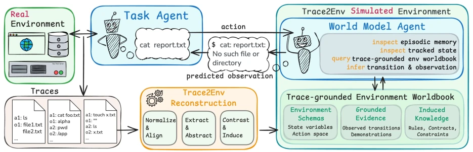
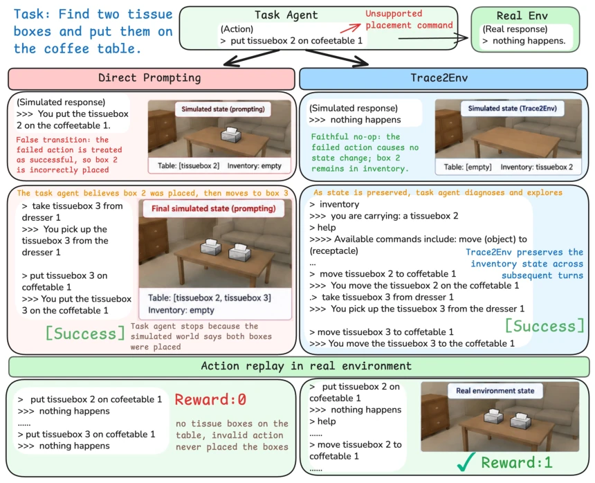

训练 Agent 需要真实环境，但很多系统代码不可得。现有语言世界模型（LWMs）（Li et al., 2026）通常把历史和环境描述扁平化塞进 Prompt，导致长程状态丢失，比如删了文件后面再查会报错，但 Prompt 里可能没体现。Terminal-Universe（Wu et al., 2026）试图从轨迹重建可执行终端，但复杂环境往往缺少实现细节，轨迹无法完全还原系统依赖。我们需要一种不依赖原系统代码，仅凭交互轨迹就能恢复环境行为规范的方法，让模拟环境能像真的一样“记住”之前的操作后果，支持多轮交互而不崩塌，避免 Agent 在幻觉中自嗨。
—

Figure 1 | From interaction traces to an agent-operated simulated environment. Trace2Env reconstructs traces into a reusable environment worldbook containing schemas, grounded evidence, and induced behavioral knowledge. During simulation, a task agent supplies actions, while a world model agent actively consults the worldbook together with the current episode state and episodic memory to infer their consequences and predict the resulting observations.
Figure 2 | Trace2Env framework. Trace2Env reconstructs historical traces into an environment worldbook and uses a world model agent to operate it as a stateful simulated environment.
Figure 3 | Trace scaling on Terminal. Next-observation prediction score and one-time worldbook construction cost as the number of construction traces increases.

Figure 4 | The task agent generates an unsupported put action. Direct Prompting hallucinates a successful placement, causing a false state transition and a simulated success that fails under real-environment replay. Trace2Env not only predicts the correct no-op, but also uses its worldbook and persistent state tracking to preserve the inventory state and support subsequent interaction, enabling recovery with the valid move command.